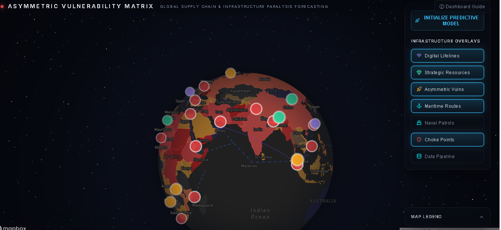

What Was Built
The solution spans both a dynamic machine learning pipeline and rich interactive dashboards to assess the Wound Vulnerability Index (WVI) and predict future asymmetrical and conventional conflicts.
1. Machine Learning Pipelines
- Data Engineering: Aggregated master geopolitical data (from sources like ACLED, UCDP, CFR Cyber Tracker) into rolling lags and predictive features (e.g.,
event_count_3yr,fatality_sum_5yr,velocity_3yr). - Offline Models: Random Forest Classifiers and Regressors trained to predict attack types and escalate infiltration volumes via
train_ml_model.py. - Dynamic Models: Real-time XGBoost pipelines that train on the fly to generate regional forecasts, risk probabilities, and predictable conflict volumes based on the latest geopolitical state via
server.py&app.py.
2. Backend API (FastAPI)
A robust FastAPI server powers the frontend with several strategic endpoints:
- /api/forecast/{country}: Returns ML-driven predictive matrices including danger status (e.g., "CRITICAL: Accelerating Infiltration") and predicted war types.
- /api/map_data: Generates WVI (Wound Vulnerability Index) scores for global heatmapping.
- /api/flow_maps & /api/digital_lifelines: Tracks major global shipping routes, choke points, naval patrols, and critical subsea data nodes.
- /api/asymmetric_vulnerabilities: Highlights new vectors of attack, such as aerospace corridors and supply chain bottlenecks.
3. Interactive Frontends
- React Dashboard: A premium, glassmorphic UI built with Mapbox GL and Recharts. It features toggles for infrastructure overlays, an interactive world map for country selection, an intelligence dossier sidebar, and a detailed predictive breakdown.
- Streamlit App: An alternative, rapid-deployment dashboard visualizing the global map and forecasting data with Plotly integration.
Key Findings & Strategic Analysis
The predictive analysis highlighted several key findings and "next-gen" wounding zones that extend beyond conventional military conflict:
- The "Cabbage Strategy" (Incremental Friction): Nations are increasingly wrapping targets in layers of civilian proxy forces and legal ambiguity, slowly suffocating adversaries through economic coercion rather than direct military engagement.
- Asymmetric Supply Disruption: Secondary tech-packaging hubs (like Penang) and transport corridors (like those in the DRC) are highly vulnerable. Sabotaging these nodes halts global supply chains with minimal geopolitical fallout.
- The Global Agricultural Choke Point: Areas holding vast reserves of critical agricultural minerals (e.g., Moroccan phosphates) represent immense demographic weapons capable of triggering global famine and inflation.
- Digital Financial Gateways: Disruption of major subsea cable routes (like the SEA-ME-WE route) represents a massive vulnerability capable of paralyzing digital economies without a single kinetic strike.
- Environmental Hostage-Taking: The control of headwaters and mega-dams (such as those in Tibet) allows powers to devastate downstream nations' agriculture via orchestrated floods or droughts.
Analysis & Intelligence Dashboards
Detailed views of the Wound Vulnerability Index (WVI) and geopolitical forecasts.
